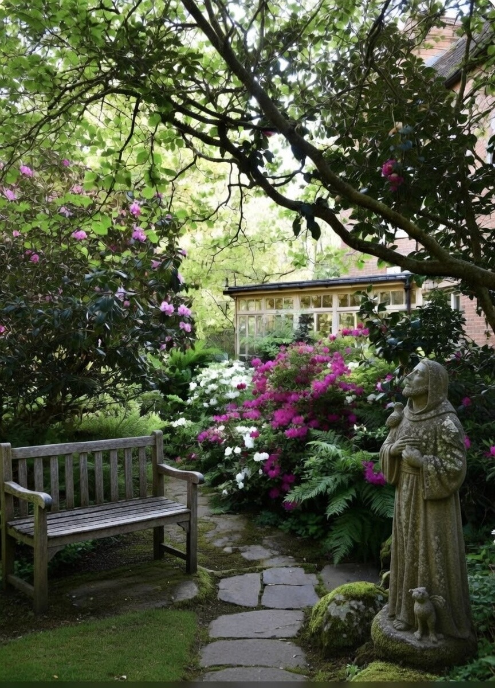
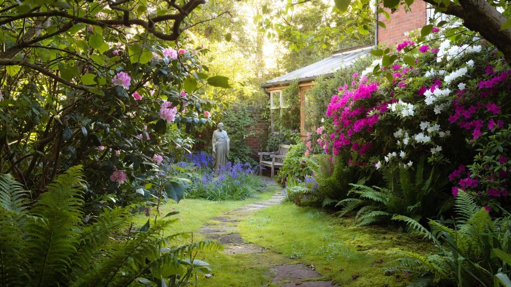
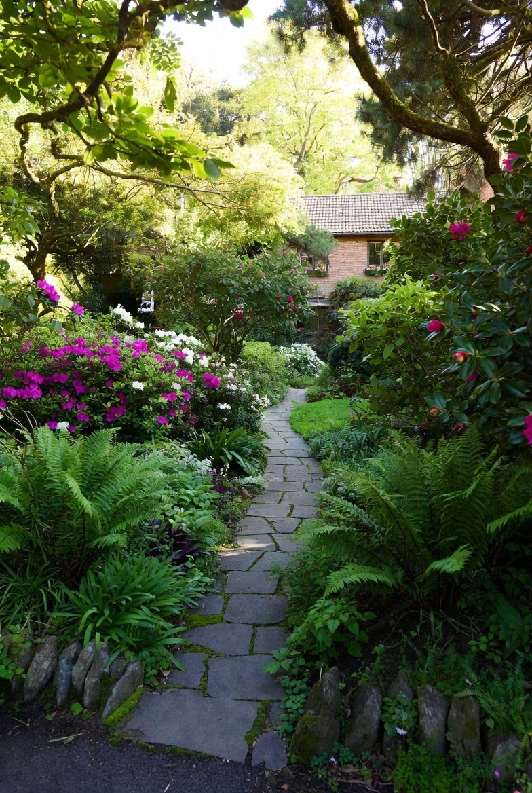
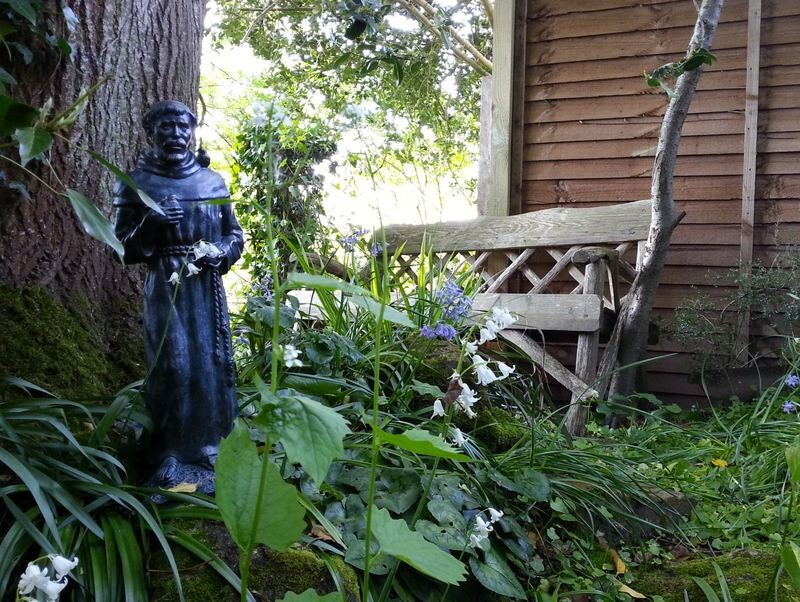

anewflowering.love
stepping into the garden
anewflowering.love
About Pearl




Water
Chat with Pearl
Write to Pearl
Listen to Pearl
About Pearl
P
Pearl reads her poems
recorded in her piano room
×
The Storeroom of the Soul
56 seconds
Gifts of Simplicity
9 minutes
P
Write to Pearl
She will reply by letter
×
Your letter has been sent. Pearl will write back soon.
Cancel
Send letter
P
Pearl Thornton
in the garden
×
Send